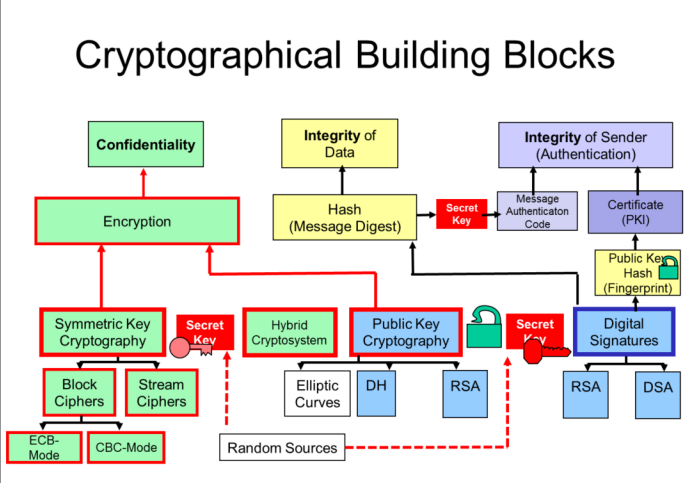

Informationssicherheit 1
Allgemein
Unterlagen
- Ebooks
- Wolfgang Ertel, Angewandte Kryptographie, Hanser, 2012
- Jörg Schwenk, Sicherheit und Kryptographie im Internet, Springer Fachmedien Wiesbaden, 2014
(eins von beiden)
Vorlesung 1 - Begriffe / Risk-Management
-
Folie 6
- Confidentiality (auch Privacy)
- Integrity (Echtheit)
- Availability
- Kurz: CIA
-
Chat: Management - Welches sind die wichtigsten Aufgaben eines Managers
- Planung
- Unterstützung der Realisierung
- Kontrolle
- Korrektur
Vorlesung 2 - Standards
-
Folie 2 De-facto Standards beispiele: ASCII (später ANSI standard), Ethernet (später IEEE-Standard), SQL
-
Chat: Wozu nutzen wir Standards?
- Kompatibilität gewährleisten
- Markterweiterung
- Differenzieren gegenüber Mitbewerber (z.B.Autoindustrie)
- Kundenanforderung
- Unabhängige Prüfung (Zertifizierung)
- Bessere Qualität
- Auszeichnung (Gütesiegel)
-
Folie 5 JTC: Joint Technical Committee
-
Folie 25
- 27001 gibt an, wie das ISMS aussehen soll
- 27002 gibt best practises für die Umsetzung an
- 27006: Diese Anforderungen müssen von Auditors erfüllt werden, damit sie andere mit 27001 zertifizieren können
-
Folie 27:
- iso 27001 gilt nicht nur für IT-Systeme, sondern für Firmeninformation allgemein
- definiert auch Prozesse (zb. Changemanagement)
-
Folie 36: Unterschied 27001 vs. 27002
- 27001: Sagt was zu tun ist und was die Norm ist
- 27002: Sagt was wie zu tun ist mit Umsetzungshinweisen
Vorlesung 3 - Gefährdungen
Notizen Referat Hyppönen
- Job war früher "Computer sichern"
- Ist zu einem sichern "der Gesellschaft" geworden, da alles af Computern läuft
- Mit einem Netzwerk, das gross genug ist, ist es fast umöglich, es komplett zu beschützen
- Viren und co. werden von kriminellen Organisationen gschrieben
- Angreifer verschieben Server ständig in der Welt, was ausnutzt, dass überall andere Rechte gelten
- Angriffe von staatlichen Organisationen
- Hacktivismus: Angriffe aus politischer Motivation
- Z.b. Attacke auf Sony von Nordkorea aus wegen Film
Vorlesung 4 - Massnahmen / Informationsquellen
-
Folie 8:
Personal Firewall hat Kopplung zu den Applikationen (kann auch Applikationen unterscheiden) -
Folie 12:
Same origin policy: zb. nur Anfragen von einem bestimmten Server erlauben -
Folie 19:
Bei biologischen Merkmalen gibt es immer Fehlerraten: Wie viel Toleranz hat die Software? -
JUST-Culture
- Heisst auch, Regeln u.U zu brechen (eigene Entscheidungen treffen)
- Fehler / Misstände melden
Vorlesung 5 - Cryptobasics
-
Folie 9:
Ansatz: LSB des Host-Images mit MSB des Covert-Images ersetzen. -
Folie 17:
Chat: Überprüfen, ob man den richtigen Schlüssel hat: Zb. mit Dictionary abgleichen, Meta-Informationen prüfen, Ethernet-Checksums (grundsätzl.: Ist der Test "sinnvoll"?)
Note
Siehe auch: https://www.khanacademy.org/computing/computer-science/cryptography/crypt/v/intro-to-cryptography
-
Folie 23: Chat:
Kein "e" im Text -
Folie 28: Chat
- Würfelzeichen:
- Buchstaben
-
Folie 32:
"Welcome to all Workshop Participants" -
Folie 47:
mögliche Schlüssel = -
Folie 51:
zb. häufigstes Zeichen suchen und annehmen, dass es "e" ist -
Folie 55: Vigenere
Jeder Buchstabe wird mit einer anderen Anzahl verschoben -
Folie 60:
Geheimcode wird immer wiederholt. Wenn man die länge kennt, ist zb. jedes 6te Zeichen gleich weit verschoben, kann man jedes 6te Zeichen analysieren (wieder mit verteilung) -
Folie 63:
Lösung: WOPK... -
Folie 67:
XOR-Verknüpfungen
Vorlesung 6 - Encryption
- Folie 6
- A5/1 hat geheimen Algorithmus (security by obscurity), wurde aber schnell geknackt
- Folie 9
- Plaintext XOR Cipher Stream = Ciphertext
- Ciphertext XOR Cipher Stream = Plaintext
- Problem: Takt muss exakt stimmen
- PRNG generiert aus kurzer Zeichenfolge einen pseudo-zufälligen Cipher-Stream
- Folie 11
- mögliche Zustände, d.h spätestens dann wiederholt es sich
- Problem mit 0-Folge
- Chat Folie 12
- Immer 1., 2. und letztes Bit XOR
- Max. Länge
- Folie 14
- Reihe X korreliert mit Output -> Attacke möglich
- Folie 18
- IV: Initalisierungsvektor (beiden bekannt)
- Braucht mit Brute-force nur noch Möglichkeiten
- Chat Folie 20
- Hex: 4 bit
- Base64: 6 bit
- Ziffern: 3.3 bit
- Alphabet:
- Alphabet & Ziffern:
- In der Praxis sind die Zeichen aber nicht zufällig gewählt, der Informationsgehalt ist also wesentlich geringer
Vorlesung 7 - Asymmetric Encryption
- Folie 3
- Public-Key Verfahren ist grundsätzlich Block-Cipher
- RSA oder ECC (Eliptic-Curve-Cryptography)
- RSA: Large Key-Size: 2048bit (Symmetrisch: zb. AES256)
- ECC: Small Key Size (224bit)
- Folie 4
- Key-Exchange (Public Key Distribution): Public-Key-Verfahren, um symmetrischen Key auszutauschen (Diffie-Hellmann, ECC)
- Folie 7 Chat
- Animation Faktorisieren vs. Multiplizieren: https://www.khanacademy.org/computing/computer-science/cryptography/modern-crypt/p/time-complexity-exploration
- Folie 17
- Generieren einer Zufallszahl zb. mit Mausbewegungen
- Primzahl wählen: http://crypto.stackexchange.com/questions/1970/how-are-primes-generated-for-rsa
- Folie 19
GCHQ hat schon 1970 das gleiche Verfahren wie bei RSA entwickelt
Vorlesung 8 - Digital Signatures
- Folie 2
- Authenticity: Person ist die, wofür sie sich ausgibt
- Folie 4
- "to hash": Etwas zerhacken
- Bildet Daten variable Länge in ein Code fixer Länge ab
- -> Verschiedene Meldungen führen auf denselben Hash
- Auch MDC (Modification Detection Code), oder Message Digest (MD)
- Einweg-Funktion, zurückrechnen darf nicht möglich sein
- Hash wird verschlüsselt -> Keyed Hash
- MAC: Message Authentication Code
- Idee Signaturen: Hash mit private key verschlüsseln, der Empfänger entschlüsselt mit public key (beweist Authentizität)
- Folie 10
- Komplexität: , beide Hashes können einzeln angegriffen werden
- Folie 13
- In gefälschten Meldungen Zusatztext einfügen, bis gleicher Hash entsteht wie bei Ursprungsnachricht
- Folie 32
- Anforderungen:
- Hohe Geschwindigkeit, aber nicht zu schnell
- 1 Bit veränderung -> komplett anderer Hash
- Kollisionen verhindern
- Zu Programmen angebene Hashes
- Schlechte Idee, weil auf der Website einfach der Hash ausgetauscht werden könnte
- Anforderungen:
- Folie 45
- Links: Private key von Bob
- Rechts: Public Key von Bob
Vorlesung 9 - Zertifikate und PKI
- Chat Folie 5
- MITM kreiert eigener Key und gaukelt Alice vor, es sei der der Bank
- Alice verschlüsselt mit dem falschen Key, MITM kann es lesen
- MITM verschlüsselt mit dem echten Key der Bank und schickt es weiter (und umgekehrt)
- Folie 9
- Fingerprint ist Hash des Public Keys
- Folie 15
- PGP-Code wurde auf Bücher gedruckt und exportiert (dank Meinungsfreiheit in den USA)
- Chat Folie 16
- not everyone knows 50 other people (some are not mutually exclusive)
-
Folie 32
- Codierung in Base64 für 6-Bit ASCII Darstellung
- pem: Darstellbarer text (ASCII 6-bit)

Vorlesung 10 - TLS/SSL
- Folie 2 Chat
- "High Performance" ist Werbespruch, Zertifikat hat nichts mit der Performance zu tun
- Bob erhält nicht eine "Kopie" des Certs, nur ein signierter Public Key
- Folie 7
- Signer ist die CA
- CA signiert Public-Key des Servers
- TLS Handshake - Folie 15
- Key Exchange
- Client schickt zufallszahl + cipher list
- Server antwortet mit gewünschtem Cipher + Certificate + Session ID
- Client prüft Cert
- Client bildet aus allen Zufallszahlen einen "Master Key" und schickt ihn verschlüsselt zum Server
- Server und Client haben nun gemeinsamen Symmetric key
ChangeSipherSpec: Wechseln von asymmetrisch zu symmetrischer Verschlüsselung
- Encrypted Session
- Server und Client benutzen Symmetric Key
- Mehr Infos: https://sites.google.com/site/tlsssloverview/handshake-process
- Key Exchange
- Folie 18 - TLS Resume
- Session Resume: Die Session ID ernet verwenden
- Server und Client benutzen wieder den gleichen Master Key
- Folie 19 - False Start
- Die Daten schon schicken, bevor das letzte Ack vom Server empfangen wird
- Folie 24 - Ephemeral DH
- Ephemeral: "flüchtig"
- Alle Diffie-Hellmann Ciphers benutzen solche "flüchtigen" Schlüssel
- "DHE": Diffie Hellmann Ephemeral
- Für jede Verbindung wird ein neues Secret ausgehandelt
- ohne "Ephemeral" würde DH immer dasselbe Secret zwischen gleichem Client und Server ausgehandelt
- https://tls.mbed.org/kb/cryptography/ephemeral-diffie-hellman
- Folie 29
- Client sendet beim Client Hello seine Session ID mit
- Folie 34
- Nachteil MAC (Hash): Bei Brute-Force theoretischein Nachteil, aber hier ist er mit dem Key verschlüsselt, daher kein Problem
- Chat Folie 37
- Chrome: chrome://flags
- Firefox: about:config - security.tls
- Folie 40 - Proxies
- Proxy baut Verbindung zum Server auf, und anschliessend mit eigenem Zertifikat zum Client
- Auf dem Client muss das Proxy-Zertifikat trusted sein (Root CA installiert)
- Chat Folie 43
- MitM ist SSL-Proxy
- Folie 47 - Perfect Forward Secrecy
- Verhindert, dass alte Verbindungem im Nachhinein noch entschlüsselt werden können
- DH: Client und Server generieren einen shared key, ohne ihn je zu übertragen
- Folie 57 - Certifacte Pinning
- Es werden nur noch bestimmte Public-Keys zugelassen
- Server sagt Client, er soll nur bestimmte Public-Keys akzeptierten
- Zur Verhinderung von MitM
- https://www.owasp.org/index.php/Certificate_and_Public_Key_Pinning
- https://developer.mozilla.org/en/docs/Web/Security/Public_Key_Pinning